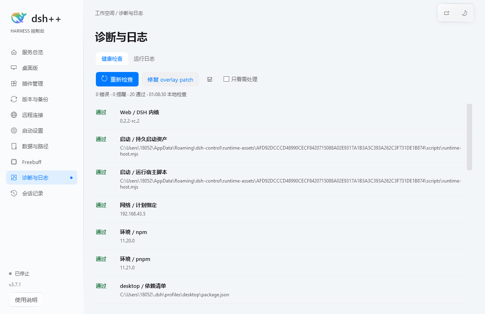

界面一览
深浅双主题 · 会话截图均为演示数据



DSH 本体是一套命令行工具；dsh++ 把日常操作收进桌面窗口，并替你盯住容易出错的环节。
一键启动、停止、重启 DSH Web；手机经同一 Wi-Fi、Tailscale 或自定义域名访问，地址一键复制。
为什么装不上、声明是什么、怎么解除，提示都说清楚；「升级到最新」可选固定版本或浮动声明。
更新前核对插件的内核要求，版本不够先拦截并给指引——不再装完才发现打不开。
启停官方桌面壳、同步 Web 配置、走官方通道更新；两端插件版本一页对照。
正式 / RC / 预览三通道，升级前自动备份，失败一键回滚，官方伴随包自动同步。
配置损坏、来源异常、中断任务提前发现；overlay 配置坏了，一键修复。
深浅双主题 · 会话截图均为演示数据

需要 Windows 10/11、.NET 8 Desktop Runtime、Node.js 与已安装的 DSH
更新与兼容的大多数疑问，答案都在界面提示里
这是依赖声明把新版挡住了。选中插件点「升级到最新」，可选固定到新版或改为 ^ 浮动声明（之后普通更新即可继续升级）。0.x 包的 ^ 只跟随同一小版本。
插件要求更高的 DSH 内核。先在「版本与备份」升级内核（正式 / RC / 预览），再回来更新插件。
多数是 cordis.patch.yml 被官方插件安装器写坏。到「诊断与日志」重新检查，按提示点「修复 overlay patch」即可（自动备份原文件）。
可以。任务看板有单写锁，同时运行时后启动一端的看板会降级；聊天、会话与插件界面不受影响。
不会。「会话记录」页只读列出标题与活动时间，不解压、不迁移、不改写任何官方数据。
.NET 8 SDK
git clone https://github.com/Jensen-Yao/dsh-plus-plus cd dsh-plus-plus dotnet publish dsh-plus-plus.csproj -c Release -r win-x64 -o publish .\publish\dsh-plus-plus.exe --self-test